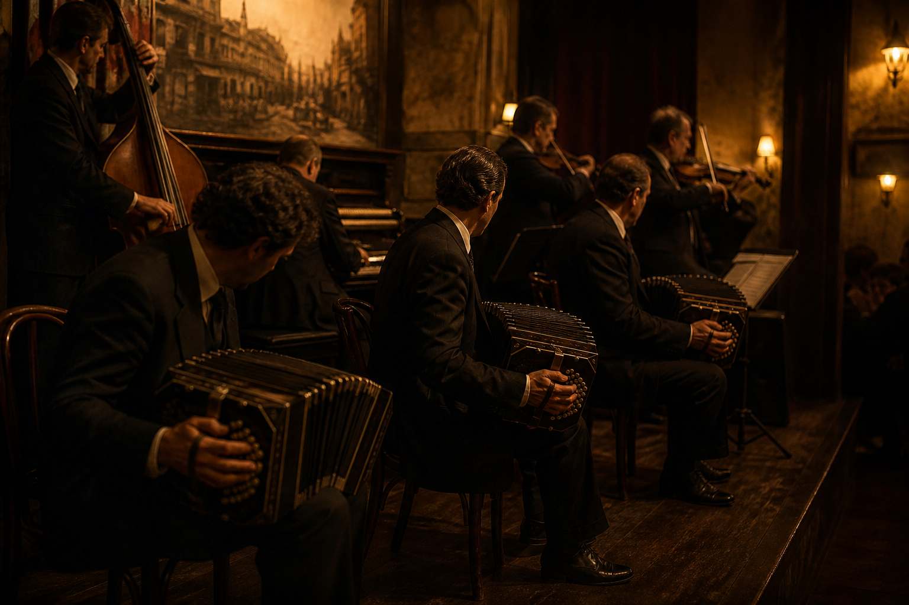
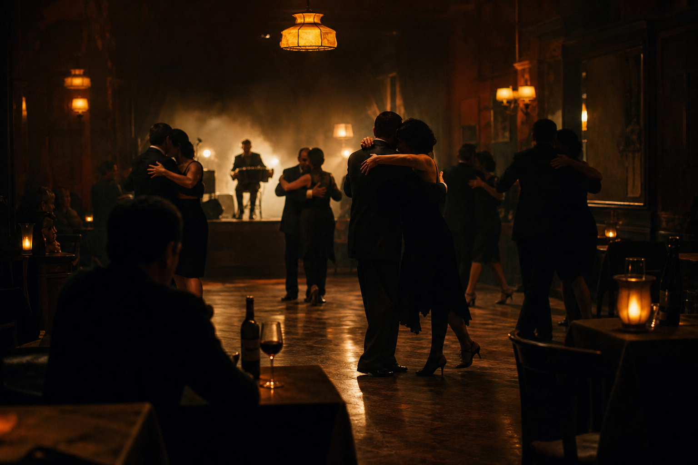

Buenas tardes a todos. Somos [nombres] y venimos a presentarles BandoneAR, un proyecto que busca traer de vuelta uno de los instrumentos más emblemáticos de nuestra cultura: el bandoneón. Democratizar el bandoneón es democratizar el tango: que más personas puedan aprenderlo, tocarlo y sostenerlo. En los próximos minutos les vamos a contar de dónde viene este instrumento, qué problema estamos resolviendo y cómo lo estamos haciendo.
BandoneAR
Democratizar el bandoneón para que el tango no quede en pocas manos.
Un instrumento digital y accesible, para aprender, tocar y sostener una cultura viva.
Nombres de los presentadores
El bandoneón es un instrumento de viento libre, de la familia de las concertinas, inventado en Alemania a mediados del siglo XIX. Originalmente se pensó como un instrumento de uso religioso y popular en Europa, portátil y económico. Llegó a Argentina y Uruguay de la mano de inmigrantes europeos hacia fines del siglo XIX, y acá encontró un destino completamente distinto al que tuvo en su lugar de origen: se convirtió en el alma del tango. Nació para ser tocado por mucha gente. Esa es la idea que queremos recuperar.
¿Qué es el bandoneón?
Instrumento de viento libre, de la familia de las concertinas. Nació popular y portátil; acá se volvió el alma del tango.
Si el bandoneón se encarece y desaparece, se achica también quién puede tocar y transmitir esa cultura.
Con el correr de las décadas, el bandoneón dejó de ser un instrumento importado para transformarse en un símbolo de identidad rioplatense. No se concibe una orquesta típica de tango sin bandoneón: es el instrumento que le da ese carácter melancólico y profundo tan característico del género. Cuidar el bandoneón es cuidar el tango como cultura viva, no como pieza de museo.

La voz del tango.
Sin bandoneón no hay orquesta típica. Es el carácter melancólico y profundo del género.
Dejó de ser un instrumento importado para volverse símbolo. Si se vuelve exclusivo, la cultura también.
Es imposible hablar de tango sin mencionar a Carlos Gardel, quien lo llevó a la fama mundial, y a los grandes bandoneonistas como Aníbal Troilo o Ástor Piazzolla, que llevaron el instrumento a otro nivel. El tango recorrió el mundo. El contraste es que el instrumento que le da identidad hoy es cada vez más difícil de tocar. Esta breve introducción histórica nos sirve para entender ese contraste con la situación actual.
Gardel, Troilo, Piazzolla.
El tango se hizo universal. El bandoneón, su instrumento, hoy es cada vez más exclusivo.
Una cultura que recorrió el mundo no puede depender de un objeto inalcanzable.

Hoy el bandoneón está en crisis. Es un instrumento cada vez menos popular, sobre todo entre los más jóvenes. Y esto no es casualidad: hay barreras muy concretas. Primero, el acceso: conseguir un bandoneón hoy es muy difícil, ya casi no se fabrican, y los que existen son en su mayoría instrumentos antiguos, importados o de colección. Segundo, el costo: un bandoneón en buen estado puede costar varios miles de dólares, un precio que lo pone fuera del alcance de la gran mayoría de las personas interesadas en aprender. Y tercero, el aprendizaje: hay muy pocos profesores especializados, y sin instrumento propio para practicar, es prácticamente imposible sostener un proceso de aprendizaje. Cuando tocar se vuelve privilegio, el tango deja de circular.
Hoy tocar es un privilegio.
El interés existe. Lo que falta es acceso, sobre todo entre quienes recién quieren empezar.
Los que existen son, en su mayoría, antiguos, importados o de colección.
Un instrumento en buen estado queda fuera del alcance de quien quiere empezar.
Y sin instrumento propio para practicar, el proceso no se sostiene.
Entonces el problema que identificamos es claro: existe una demanda genuina de personas que quieren aprender a tocar el bandoneón —ya sea por herencia cultural, por curiosidad musical o por amor al tango— pero se encuentran con un instrumento inaccesible, caro, y sin la estructura de enseñanza necesaria para aprenderlo. Democratizar el bandoneón es abrir la puerta al tango. Nuestro cliente ideal es esa persona: alguien con interés genuino en el tango o la música popular rioplatense, que quizás alguna vez soñó con tocar el bandoneón pero se frenó al ver el precio o al no saber por dónde empezar. BandoneAR nace para resolver exactamente eso: un bandoneón digital, más accesible en costo, más fácil de conseguir, y pensado para facilitar el aprendizaje incluso sin un profesor presencial.
Hay demanda genuina: herencia cultural, curiosidad musical, amor al género. Lo que frena no es el deseo, es el precio y la falta de un camino para empezar.
Alguien que soñó con tocar el bandoneón y se detuvo al ver el costo, o al no saber por dónde empezar.
Un bandoneón digital: más barato, más fácil de conseguir, y pensado para aprender incluso sin profesor presencial. Lo aprendido se puede llevar al instrumento tradicional.
Para que se entienda mejor esta idea, les preparamos un pequeño video.
Cómo se abre esa puerta.
Un video corto sobre el camino hacia BandoneAR.
De la barrera del precio a un instrumento con el que se puede empezar.
Reproducir el video. Hasta 3 minutos. No hablar por encima, salvo una frase de cierre al terminar.
La cultura, más cerca.
Colocá el archivo assetes/video.mp4 para reproducirlo acá.
Este es BandoneAR. Mostrar el instrumento físicamente. Conserva la disposición tradicional de 71 botones, el fuelle físico y el comportamiento bisonoro: una nota al abrir y otra al cerrar. Funciona de forma autónoma y también como USB-MIDI. No es un sintetizador con forma de bandoneón: es una puerta de entrada al instrumento real. Lo aprendido se puede transferir al bandoneón tradicional.
Este es BandoneAR.
Misma esencia visual y física. Por dentro, otra lógica. El gesto se conserva para que lo aprendido se pueda llevar al bandoneón real.
No reemplaza la tradición: acerca a más personas a ella.
- Disposición tradicional de 71 botones: 38 a la derecha y 33 a la izquierda.
- Comportamiento bisonoro: una nota al abrir y otra al cerrar el fuelle.
- Fuelle físico como control expresivo, no un teclado disfrazado.
- Funciona solo o como USB-MIDI.
En un bandoneón tradicional, el sonido se genera por aire que pasa a través de lengüetas metálicas al abrir y cerrar el fuelle, combinado con la presión de los botones. En BandoneAR emulamos ese mismo comportamiento de forma digital: sensores detectan el movimiento, la dirección y la dinámica del fuelle, y la combinación de botones presionados. Esa información se traduce en sonido mediante síntesis digital. Botón, más dirección del fuelle, más velocidad, igual a sonido. Esto baja el costo de fabricación y habilita guías visuales o sonoras para quien empieza.
Mismo gesto. Otro corazón.
Conservamos la lógica del bandoneón. Cambiamos lo que encarece fabricarlo y lo que traba el aprendizaje.
Menos costo, más personas tocando, misma cultura en las manos.
Tradicional
Aire del fuelle a través de lengüetas metálicas, más la presión de los botones.
BandoneAR
Sensores leen movimiento, dirección y dinámica. La síntesis digital reproduce el timbre y habilita guías para quien empieza.
BandoneAR no es un sintetizador con forma de bandoneón. Es una puerta de entrada al bandoneón real: más accesible para empezar, serio para aprender, y con posibilidades extra como práctica silenciosa, audio integrado, portabilidad e integración MIDI. Si logramos que una persona que hoy no puede acceder a un bandoneón pueda empezar a aprender mañana, la tecnología está cumpliendo su función.
Accesible para empezar. Serio para aprender.
No digitalizamos una tradición. Facilitamos el camino hacia ella.
Muy por debajo del costo de un bandoneón tradicional, para que más gente pueda empezar.
La disposición y la lógica de ejecución apuntan a que el aprendizaje se pueda trasladar a un bandoneón real.
Práctica silenciosa, audio integrado, portabilidad e integración con producción musical digital vía USB-MIDI.
Con esto creemos que BandoneAR puede devolverle vida a un instrumento que corre riesgo de perderse, haciéndolo accesible para una nueva generación. Democratizar el bandoneón es cuidar el tango como cultura que se toca, no que se contempla. No queremos digitalizar una tradición: queremos facilitar el camino hacia ella. Muchas gracias por su atención, quedamos abiertos a sus preguntas.
Que el tango no quede en una vitrina.
Democratizar el bandoneón es devolverle la cultura a una nueva generación.
No queremos digitalizar una tradición. Queremos facilitar el camino hacia ella.